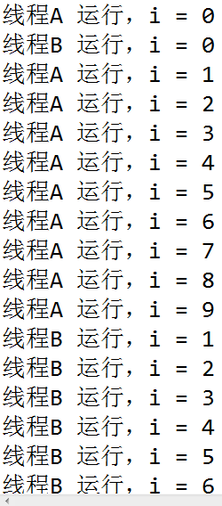

原文连接:https://www.cnblogs.com/java1024/p/11950129.html
进程与线程
进程是程序的一次动态执行过程，它需要经历从代码加载，代码执行到执行完毕的一个完整的过程，这个过程也是进程本身从产生，发展到最终消亡的过程。多进程操作系统能同时达运行多个进程（程序），由于 CPU 具备分时机制，所以每个进程都能循环获得自己的CPU 时间片。由于 CPU 执行速度非常快，使得所有程序好像是在同时运行一样。
多线程是实现并发机制的一种有效手段。进程和线程一样，都是实现并发的一个基本单位。线程是比进程更小的执行单位，线程是进程的基础之上进行进一步的划分。所谓多线程是指一个进程在执行过程中可以产生多个更小的程序单元，这些更小的单元称为线程，这些线程可以同时存在，同时运行，一个进程可能包含多个同时执行的线程。进程与线程的区别如图所示：
Java中线程实现的方式
在 Java 中实现多线程有两种手段，一种是继承 Thread 类，另一种就是实现 Runnable 接口。下面我们就分别来介绍这两种方式的使用。
实现 Runnable 接口
1 package ljz;
2 class MyThread implements Runnable{ // 实现Runnable接口，作为线程的实现类
3 private String name ; // 表示线程的名称
4 public MyThread(String name){
5 this.name = name ; // 通过构造方法配置name属性
6 }
7 public void run(){ // 覆写run()方法，作为线程 的操作主体
8 for(int i=0;i<10;i++){
9 System.out.println(name + "运行，i = " + i) ;
10 }
11 }
12 };
13 public class RunnableDemo01{
14 public static void main(String args[]){
15 MyThread mt1 = new MyThread("线程A ") ; // 实例化对象
16 MyThread mt2 = new MyThread("线程B ") ; // 实例化对象
17 Thread t1 = new Thread(mt1) ; // 实例化Thread类对象
18 Thread t2 = new Thread(mt2) ; // 实例化Thread类对象
19 t1.start() ; // 启动多线程
20 t2.start() ; // 启动多线程
21 }
22 };程序运行结果：
继承 Thread 类
1 class MyThread extends Thread{ // 继承Thread类，作为线程的实现类
2 private String name ; // 表示线程的名称
3 public MyThread(String name){
4 this.name = name ; // 通过构造方法配置name属性
5 }
6 public void run(){ // 覆写run()方法，作为线程 的操作主体
7 for(int i=0;i<10;i++){
8 System.out.println(name + "运行，i = " + i) ;
9 }
10 }
11 };
12 public class ThreadDemo02{
13 public static void main(String args[]){
14 MyThread mt1 = new MyThread("线程A ") ; // 实例化对象
15 MyThread mt2 = new MyThread("线程B ") ; // 实例化对象
16 mt1.start() ; // 调用线程主体
17 mt2.start() ; // 调用线程主体
18 }
19 };程序运行结果：

从程序可以看出，现在的两个线程对象是交错运行的，哪个线程对象抢到了 CPU 资源，哪个线程就可以运行，所以程序每次的运行结果肯定是不一样的，在线程启动虽然调用的是 start() 方法，但实际上调用的却是 run() 方法定义的主体。
Thread 类和 Runnable 接口
通过 Thread 类和 Runable 接口都可以实现多线程，那么两者有哪些联系和区别呢？下面我们观察 Thread 类的定义。
public class Thread extends Object implements Runnable从 Thread 类的定义可以清楚的发现，Thread 类也是 Runnable 接口的子类，但在Thread类中并没有完全实现 Runnable 接口中的 run() 方法，下面是 Thread 类的部分定义。
1 Private Runnable target；
2 public Thread(Runnable target,String name){
3 init(null,target,name,0);
4 }
5 private void init(ThreadGroup g,Runnable target,String name,long stackSize){
6 ...
7 this.target=target;
8 }
9 public void run(){
10 if(target!=null){
11 target.run();
12 }
13 }从定义中可以发现，在 Thread 类中的 run() 方法调用的是 Runnable 接口中的 run() 方法，也就是说此方法是由 Runnable 子类完成的，所以如果要通过继承 Thread 类实现多线程，则必须覆写 run()。
实际上 Thread 类和 Runnable 接口之间在使用上也是有区别的，如果一个类继承 Thread类，则不适合于多个线程共享资源，而实现了 Runnable 接口，就可以方便的实现资源的共享。
线程的状态变化
要想实现多线程，必须在主线程中创建新的线程对象。任何线程一般具有5种状态，即创建，就绪，运行，阻塞，终止。下面分别介绍一下这几种状态：
-
创建状态
在程序中用构造方法创建了一个线程对象后，新的线程对象便处于新建状态，此时它已经有了相应的内存空间和其他资源，但还处于不可运行状态。新建一个线程对象可采用Thread 类的构造方法来实现，例如 “Thread thread=new Thread()”。
-
就绪状态
新建线程对象后，调用该线程的 start() 方法就可以启动线程。当线程启动时，线程进入就绪状态。此时，线程将进入线程队列排队，等待 CPU 服务，这表明它已经具备了运行条件。
-
运行状态
当就绪状态被调用并获得处理器资源时，线程就进入了运行状态。此时，自动调用该线程对象的 run() 方法。run() 方法定义该线程的操作和功能。
-
阻塞状态
一个正在执行的线程在某些特殊情况下，如被人为挂起或需要执行耗时的输入/输出操作，会让 CPU 暂时中止自己的执行，进入阻塞状态。在可执行状态下，如果调用sleep(),suspend(),wait() 等方法，线程都将进入阻塞状态，发生阻塞时线程不能进入排队队列，只有当引起阻塞的原因被消除后，线程才可以转入就绪状态。
-
死亡状态
线程调用 stop() 方法时或 run() 方法执行结束后，即处于死亡状态。处于死亡状态的线程不具有继续运行的能力。
在此提出一个问题，Java 程序每次运行至少启动几个线程？
回答：至少启动两个线程，每当使用 Java 命令执行一个类时，实际上都会启动一个 JVM，每一个JVM实际上就是在操作系统中启动一个线程，Java 本身具备了垃圾的收集机制。所以在 Java 运行时至少会启动两个线程，一个是 main 线程，另外一个是垃圾收集线程。
取得和设置线程的名称
1 class MyThread implements Runnable{ //实现Runnable接口
2 public void run(){
3 for(int i=0;i<3;i++){
4 System.Out.Println(Thread.currentThread().getName()+"运行, i="+i); //取得当前线程的名称
5 }
6 }
7 };
8
9 public class ThreadDemo{
10 public static void main(String args[]){
11 MyThread my=new MyThread(); //定义Runnable子类对象
12 new Thread(my).start; //系统自动设置线程名称
13 new Thread(my,"线程A").start(); //手工设置线程名称
14 }
15 }; 程序运行结果：
线程的操作方法
刚才在分析自定义模式工作原理的时候其实就已经提到了，如果想要更改Glide的默认配
线程的强制运行
在线程操作中，可以使用 join() 方法让一个线程强制运行，线程强制运行期间，其他线程无法运行，必须等待此线程完成之后才可以继续执行。
1 class MyThread implements Runnable{ // 实现Runnable接口
2 public void run(){ // 覆写run()方法
3 for(int i=0;i<50;i++){
4 System.out.println(Thread.currentThread().getName()
5 + "运行，i = " + i) ; // 取得当前线程的名字
6 }
7 }
8 };
9 public class ThreadJoinDemo{
10 public static void main(String args[]){
11 MyThread mt = new MyThread() ; // 实例化Runnable子类对象
12 Thread t = new Thread(mt,"线程"); // 实例化Thread对象
13 t.start() ; // 启动线程
14 for(int i=0;i<50;i++){
15 if(i>10){
16 try{
17 t.join() ; // 线程强制运行
18 }catch(InterruptedException e){
19 }
20 }
21 System.out.println("Main线程运行 --> " + i) ;
22 }
23 }
24 };程序运行结果：
线程的休眠
在程序中允许一个线程进行暂时的休眠，直接使用 Thread.sleep() 即可实现休眠。
1 class MyThread implements Runnable{ // 实现Runnable接口
2 public void run(){ // 覆写run()方法
3 for(int i=0;i<50;i++){
4 try{
5 Thread.sleep(500) ; // 线程休眠
6 }catch(InterruptedException e){
7 }
8 System.out.println(Thread.currentThread().getName()
9 + "运行，i = " + i) ; // 取得当前线程的名字
10 }
11 }
12 };
13 public class ThreadSleepDemo{
14 public static void main(String args[]){
15 MyThread mt = new MyThread() ; // 实例化Runnable子类对象
16 Thread t = new Thread(mt,"线程"); // 实例化Thread对象
17 t.start() ; // 启动线程
18 }
19 };程序执行结果：
中断线程
当一个线程运行时，另外一个线程可以直接通过interrupt()方法中断其运行状态。
1 class MyThread implements Runnable{ // 实现Runnable接口
2 public void run(){ // 覆写run()方法
3 System.out.println("1、进入run()方法") ;
4 try{
5 Thread.sleep(10000) ; // 线程休眠10秒
6 System.out.println("2、已经完成了休眠") ;
7 }catch(InterruptedException e){
8 System.out.println("3、休眠被终止") ;
9 return ; // 返回调用处
10 }
11 System.out.println("4、run()方法正常结束") ;
12 }
13 };
14 public class ThreadInterruptDemo{
15 public static void main(String args[]){
16 MyThread mt = new MyThread() ; // 实例化Runnable子类对象
17 Thread t = new Thread(mt,"线程"); // 实例化Thread对象
18 t.start() ; // 启动线程
19 try{
20 Thread.sleep(2000) ; // 线程休眠2秒
21 }catch(InterruptedException e){
22 System.out.println("3、休眠被终止") ;
23 }
24 t.interrupt() ; // 中断线程执行
25 }
26 };程序运行结果是：
后台线程
在 Java 程序中，只要前台有一个线程在运行，则整个 Java 进程都不会消失，所以此时可以设置一个后台线程，这样即使 Java 线程结束了，此后台线程依然会继续执行，要想实现这样的操作，直接使用 setDaemon() 方法即可。
1 class MyThread implements Runnable{ // 实现Runnable接口
2 public void run(){ // 覆写run()方法
3 while(true){
4 System.out.println(Thread.currentThread().getName() + "在运行。") ;
5 }
6 }
7 };
8 public class ThreadDaemonDemo{
9 public static void main(String args[]){
10 MyThread mt = new MyThread() ; // 实例化Runnable子类对象
11 Thread t = new Thread(mt,"线程"); // 实例化Thread对象
12 t.setDaemon(true) ; // 此线程在后台运行
13 t.start() ; // 启动线程
14 }
15 };在线程类 MyThread 中，尽管 run() 方法中是死循环的方式，但是程序依然可以执行完，因为方法中死循环的线程操作已经设置成后台运行。
线程的优先级
在 Java 的线程操作中，所有的线程在运行前都会保持在就绪状态，那么此时，哪个线程的优先级高，哪个线程就有可能会先被执行。
1 class MyThread implements Runnable{ // 实现Runnable接口
2 public void run(){ // 覆写run()方法
3 for(int i=0;i<5;i++){
4 try{
5 Thread.sleep(500) ; // 线程休眠
6 }catch(InterruptedException e){
7 }
8 System.out.println(Thread.currentThread().getName()
9 + "运行，i = " + i) ; // 取得当前线程的名字
10 }
11 }
12 };
13 public class ThreadPriorityDemo{
14 public static void main(String args[]){
15 Thread t1 = new Thread(new MyThread(),"线程A") ; // 实例化线程对象
16 Thread t2 = new Thread(new MyThread(),"线程B") ; // 实例化线程对象
17 Thread t3 = new Thread(new MyThread(),"线程C") ; // 实例化线程对象
18 t1.setPriority(Thread.MIN_PRIORITY) ; // 优先级最低
19 t2.setPriority(Thread.MAX_PRIORITY) ; // 优先级最高
20 t3.setPriority(Thread.NORM_PRIORITY) ; // 优先级最中等
21 t1.start() ; // 启动线程
22 t2.start() ; // 启动线程
23 t3.start() ; // 启动线程
24 }
25 };程序运行结果：
从程序的运行结果中可以观察到，线程将根据其优先级的大小来决定哪个线程会先运行，但是需要注意并非优先级越高就一定会先执行，哪个线程先执行将由 CPU 的调度决定。
线程的礼让
在线程操作中，也可以使用 yield() 方法将一个线程的操作暂时让给其他线程执行
1 class MyThread implements Runnable{ // 实现Runnable接口
2 public void run(){ // 覆写run()方法
3 for(int i=0;i<5;i++){
4 try{
5 Thread.sleep(500) ;
6 }catch(Exception e){
7 }
8 System.out.println(Thread.currentThread().getName()
9 + "运行，i = " + i) ; // 取得当前线程的名字
10 if(i==2){
11 System.out.print("线程礼让：") ;
12 Thread.currentThread().yield() ; // 线程礼让
13 }
14 }
15 }
16 };
17 public class ThreadYieldDemo{
18 public static void main(String args[]){
19 MyThread my = new MyThread() ; // 实例化MyThread对象
20 Thread t1 = new Thread(my,"线程A") ;
21 Thread t2 = new Thread(my,"线程B") ;
22 t1.start() ;
23 t2.start() ;
24 }
25 };程序执行结果：
同步以及死锁
一个多线程的程序如果是通过 Runnable 接口实现的，则意味着类中的属性被多个线程共享，那么这样就会造成一种问题，如果这多个线程要操作同一个资源时就有可能出现资源同步问题。
解决方法：
同步代码块
1 synchronized(同步对象)｛
2 需要同步的代码
3 ｝ 1 class MyThread implements Runnable{
2 private int ticket = 5 ; // 假设一共有5张票
3 public void run(){
4 for(int i=0;i<100;i++){
5 synchronized(this){ // 要对当前对象进行同步
6 if(ticket>0){ // 还有票
7 try{
8 Thread.sleep(300) ; // 加入延迟
9 }catch(InterruptedException e){
10 e.printStackTrace() ;
11 }
12 System.out.println("卖票：ticket = " + ticket-- );
13 }
14 }
15 }
16 }
17 };
18 public class SyncDemo02{
19 public static void main(String args[]){
20 MyThread mt = new MyThread() ; // 定义线程对象
21 Thread t1 = new Thread(mt) ; // 定义Thread对象
22 Thread t2 = new Thread(mt) ; // 定义Thread对象
23 Thread t3 = new Thread(mt) ; // 定义Thread对象
24 t1.start() ;
25 t2.start() ;
26 t3.start() ;
27 }
28 };程序执行结果：
同步方法
除了可以将需要的代码设置成同步代码块外，也可以使用 synchronized 关键字将一个方法声明为同步方法。
1 synchronized 方法返回值 方法名称（参数列表）｛
2
3 ｝ 1 class MyThread implements Runnable{
2 private int ticket = 5 ; // 假设一共有5张票
3 public void run(){
4 for(int i=0;i<100;i++){
5 this.sale() ; // 调用同步方法
6 }
7 }
8 public synchronized void sale(){ // 声明同步方法
9 if(ticket>0){ // 还有票
10 try{
11 Thread.sleep(300) ; // 加入延迟
12 }catch(InterruptedException e){
13 e.printStackTrace() ;
14 }
15 System.out.println("卖票：ticket = " + ticket-- );
16 }
17
18 }
19 };
20 public class SyncDemo03{
21 public static void main(String args[]){
22 MyThread mt = new MyThread() ; // 定义线程对象
23 Thread t1 = new Thread(mt) ; // 定义Thread对象
24 Thread t2 = new Thread(mt) ; // 定义Thread对象
25 Thread t3 = new Thread(mt) ; // 定义Thread对象
26 t1.start() ;
27 t2.start() ;
28 t3.start() ;
29 }
30 };程序执行结果：
从程序运行的结果可以发现，此代码完成了与之前同步代码同样的功能。
死锁
同步可以保证资源共享操作的正确性，但是过多同步也会产生问题。例如，现在张三想要李四的画，李四想要张三的书，张三对李四说“把你的画给我，我就给你书”，李四也对张三说“把你的书给我，我就给你画”两个人互相等对方先行动，就这么干等没有结果，这实际上就是死锁的概念。
所谓死锁，就是两个线程都在等待对方先完成，造成程序的停滞，一般程序的死锁都是在程序运行时出现的。
下面以一个简单范例说明这个概念
1 class Zhangsan{ // 定义张三类
2 public void say(){
3 System.out.println("张三对李四说：“你给我画，我就把书给你。”") ;
4 }
5 public void get(){
6 System.out.println("张三得到画了。") ;
7 }
8 };
9 class Lisi{ // 定义李四类
10 public void say(){
11 System.out.println("李四对张三说：“你给我书，我就把画给你”") ;
12 }
13 public void get(){
14 System.out.println("李四得到书了。") ;
15 }
16 };
17 public class ThreadDeadLock implements Runnable{
18 private static Zhangsan zs = new Zhangsan() ; // 实例化static型对象
19 private static Lisi ls = new Lisi() ; // 实例化static型对象
20 private boolean flag = false ; // 声明标志位，判断那个先说话
21 public void run(){ // 覆写run()方法
22 if(flag){
23 synchronized(zs){ // 同步张三
24 zs.say() ;
25 try{
26 Thread.sleep(500) ;
27 }catch(InterruptedException e){
28 e.printStackTrace() ;
29 }
30 synchronized(ls){
31 zs.get() ;
32 }
33 }
34 }else{
35 synchronized(ls){
36 ls.say() ;
37 try{
38 Thread.sleep(500) ;
39 }catch(InterruptedException e){
40 e.printStackTrace() ;
41 }
42 synchronized(zs){
43 ls.get() ;
44 }
45 }
46 }
47 }
48 public static void main(String args[]){
49 ThreadDeadLock t1 = new ThreadDeadLock() ; // 控制张三
50 ThreadDeadLock t2 = new ThreadDeadLock() ; // 控制李四
51 t1.flag = true ;
52 t2.flag = false ;
53 Thread thA = new Thread(t1) ;
54 Thread thB = new Thread(t2) ;
55 thA.start() ;
56 thB.start() ;
57 }
58 };程序运行结果：
以下代码不再执行，程序进入死锁状态。
总结
至此关于多线程一些基本操作就介绍完了，鉴于笔者经验有限，如果有什么不足和缺漏的地方，欢迎相互交流学习，感谢大家！
转自：https://blog.csdn.net/lijizhi19950123/article/details/78024612